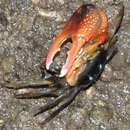
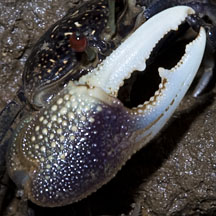
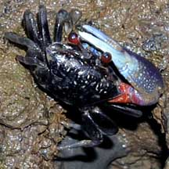
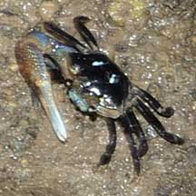
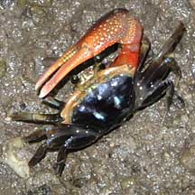

|
|
| crustaceans text index | photo index |
| Phylum Arthropoda > Subphylum Crustacea > Class Malacostraca > Order Decapoda > Brachyurans > Superfamily Ocypodoidea > Genus Uca |
| Stout
pincered fiddler crab awaiting identification* Family Ocypodidae updated Dec 2019 Where seen? This fiddler crab with a rather short and stout enlarged pincer is seen in the back mangroves. Features: Body width 1-1.5cm. Body squarish. The male fiddler crab's enlarged pincer about one and half time as long as the body width. The enlarged pincer's outer palm is pimply with groove on the lower edge. The movable upper finger meets (does not extend past) the immobile lower finger. The tips of the fingers are flattened and sword- or sabre-like. There is a wide gape between the upper and lower finger. The enlarged pincer may be orange, pinkish, purplish. Body colour dark often with a pair of pale bars. Eyes reddish or black, on long stalks pale or yellowish, walking legs short black or brown. Crabs on this page may be from different species including Uca dussumieri, Uca paradussumieri and Uca forcipata=Uca manii. These are difficult to tell apart in the field. |
|
 Sungei Buloh Wetland Reserve, Sep 09 |
 Sungei Buloh Wetland Reserve, Aug 09 |
 Chek Jawa, Sep 09 |
|
 Chek Jawa, Dec 09 |
 Pasir Ris Park, Apr 10 |
 Sungei Buloh Wetland Reserve, Sep 09 |
*Species are difficult to positively identify without close examination.
On this website, they are grouped by external features for convenience of display.
| Stout pincered fiddler crabs on Singapore shores |
On wildsingapore
flickr
|
| Other sightings on Singapore shores |